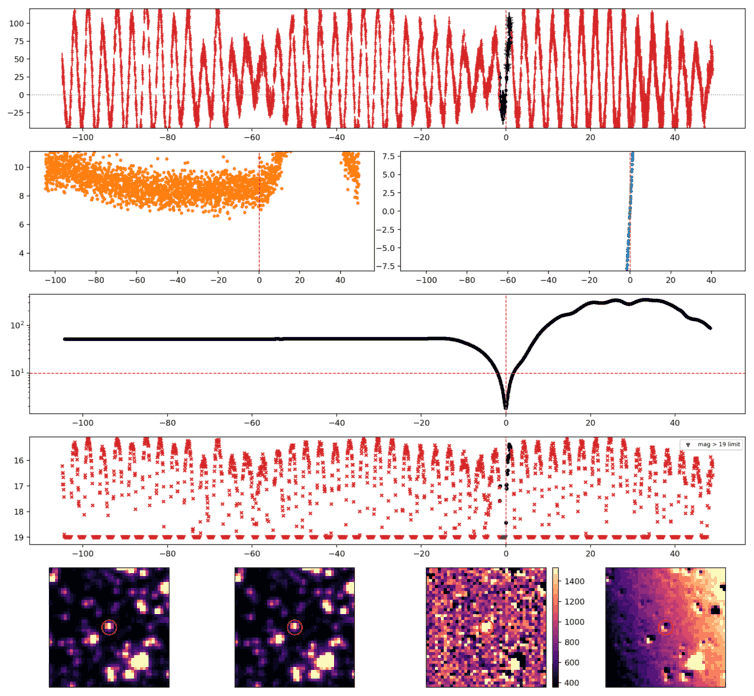
Search centered on refined position (158.4340642, -47.9872631 deg). Gaia coordinates are at J2016.0; proper motions are shown, without epoch propagation. A positional match does not change the candidate flags.
| Source ID / catalog entry | Separation (arcsec) | RA (deg) | Dec (deg) | G (mag) | BP (mag) | RP (mag) | Parallax ± error (mas) | PM RA* ± error (mas/yr) | PM Dec ± error (mas/yr) | RUWE | Variability |
|---|---|---|---|---|---|---|---|---|---|---|---|
| 5364692814479223040 | 3.560 | 158.4338960 | -47.9862808 | 18.923 | — | — | — | — | — | — | NOT_AVAILABLE |
Retrieved 2026-10-08T07:54:45.359528+00:00
Representative chosen by category, detection count, then Gaussian S/N. Original measurements and classifications are retained below.
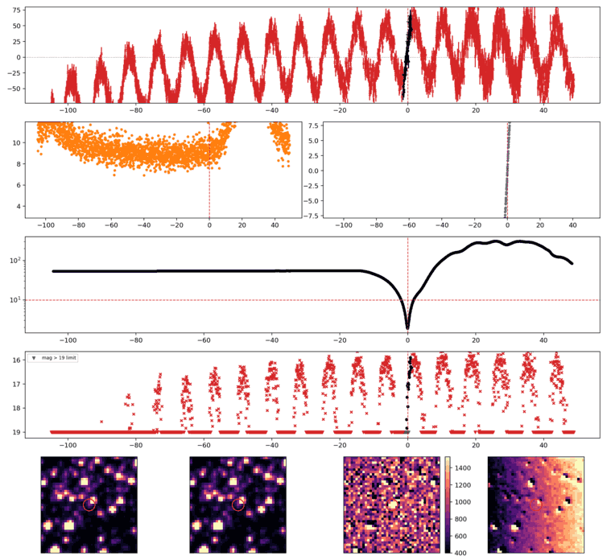
Search centered on refined position (158.9690413, -49.0674613 deg). Gaia coordinates are at J2016.0; proper motions are shown, without epoch propagation. A positional match does not change the candidate flags.
| Source ID / catalog entry | Separation (arcsec) | RA (deg) | Dec (deg) | G (mag) | BP (mag) | RP (mag) | Parallax ± error (mas) | PM RA* ± error (mas/yr) | PM Dec ± error (mas/yr) | RUWE | Variability |
|---|---|---|---|---|---|---|---|---|---|---|---|
| 5364438414984701184 | 2.918 | 158.9689806 | -49.0682710 | 16.044 | 16.585 | 15.332 | 0.298 ± 0.036 | -9.139 ± 0.033 | 5.080 ± 0.033 | 0.983 | NOT_AVAILABLE |
| 5364438414979306368 | 3.412 | 158.9701613 | -49.0680613 | 18.790 | 19.213 | 17.778 | 1.232 ± 0.206 | -5.232 ± 0.199 | 1.136 ± 0.188 | 1.102 | NOT_AVAILABLE |
| 5364438414984701568 | 4.688 | 158.9709626 | -49.0677946 | 16.860 | 17.304 | 16.182 | 0.305 ± 0.057 | -5.671 ± 0.052 | 1.304 ± 0.050 | 0.980 | NOT_AVAILABLE |
Retrieved 2026-10-08T07:54:57.216957+00:00
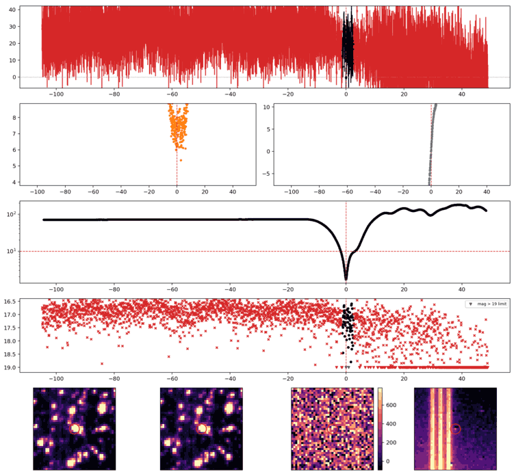
Search centered on refined position (160.0420552, -26.2741174 deg). Gaia coordinates are at J2016.0; proper motions are shown, without epoch propagation. A positional match does not change the candidate flags.
No Gaia DR3 sources found within 5 arcseconds.
Retrieved 2026-10-08T07:55:07.873057+00:00
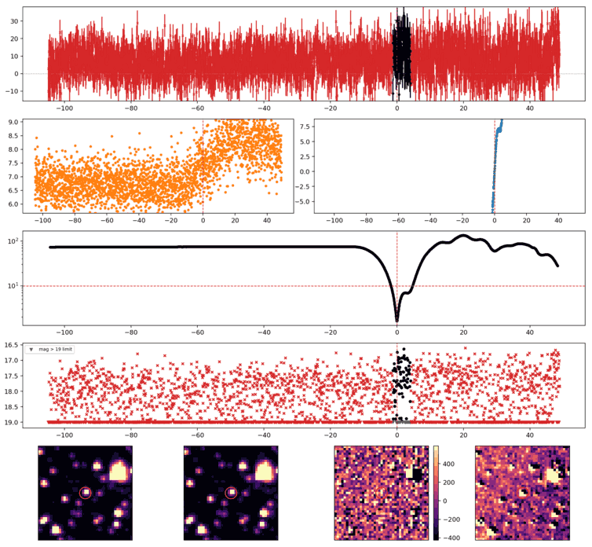
Search centered on refined position (153.1313463, -29.5605866 deg). Gaia coordinates are at J2016.0; proper motions are shown, without epoch propagation. A positional match does not change the candidate flags.
No Gaia DR3 sources found within 5 arcseconds.
Retrieved 2026-10-08T07:55:17.703324+00:00
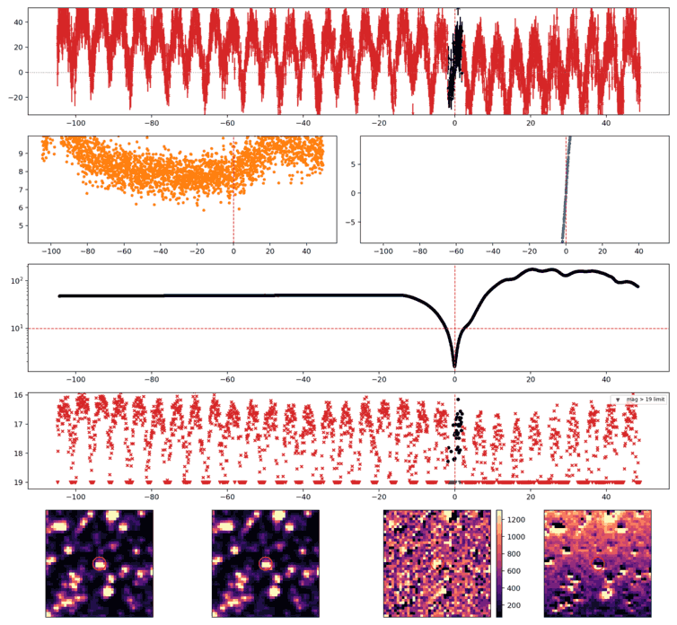
Search centered on refined position (167.4689432, -53.0899721 deg). Gaia coordinates are at J2016.0; proper motions are shown, without epoch propagation. A positional match does not change the candidate flags.
| Source ID / catalog entry | Separation (arcsec) | RA (deg) | Dec (deg) | G (mag) | BP (mag) | RP (mag) | Parallax ± error (mas) | PM RA* ± error (mas/yr) | PM Dec ± error (mas/yr) | RUWE | Variability |
|---|---|---|---|---|---|---|---|---|---|---|---|
| 5347592213229787648 | 4.964 | 167.4708955 | -53.0892462 | 15.668 | 15.965 | 15.170 | 0.313 ± 0.029 | -10.201 ± 0.029 | 3.035 ± 0.028 | 0.953 | VARIABLE |
Retrieved 2026-10-08T07:55:27.354705+00:00
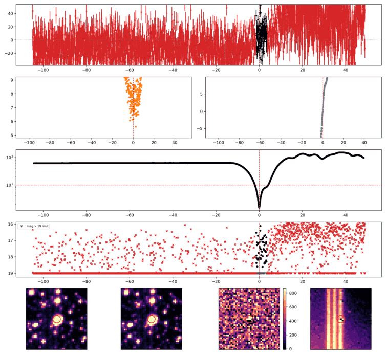
Search centered on refined position (160.4703351, -25.2409140 deg). Gaia coordinates are at J2016.0; proper motions are shown, without epoch propagation. A positional match does not change the candidate flags.
No Gaia DR3 sources found within 5 arcseconds.
Retrieved 2026-10-08T07:55:32.138887+00:00
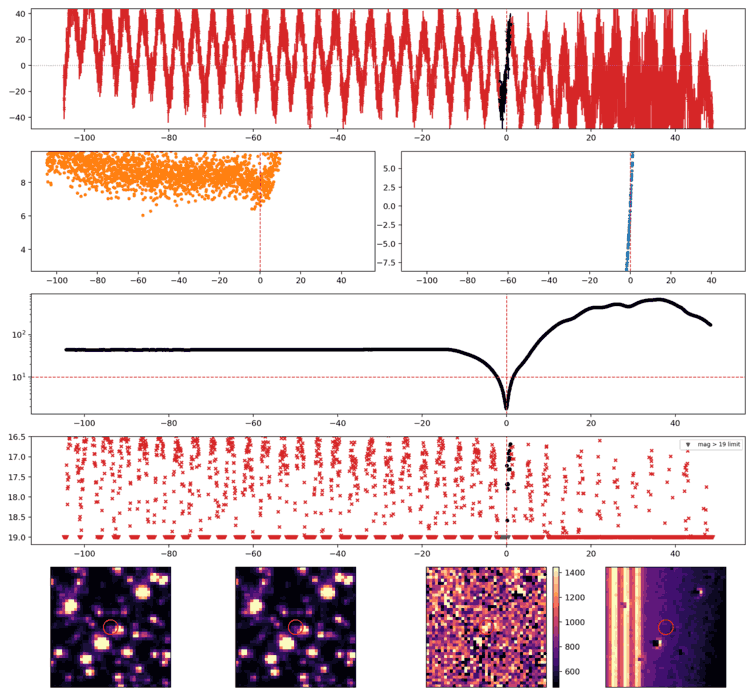
Search centered on refined position (157.5902108, -42.5982828 deg). Gaia coordinates are at J2016.0; proper motions are shown, without epoch propagation. A positional match does not change the candidate flags.
| Source ID / catalog entry | Separation (arcsec) | RA (deg) | Dec (deg) | G (mag) | BP (mag) | RP (mag) | Parallax ± error (mas) | PM RA* ± error (mas/yr) | PM Dec ± error (mas/yr) | RUWE | Variability |
|---|---|---|---|---|---|---|---|---|---|---|---|
| 5368235234790249600 | 3.451 | 157.5911738 | -42.5989281 | 14.992 | 15.197 | 13.962 | 1.015 ± 0.241 | -6.332 ± 0.185 | -5.724 ± 0.207 | 10.535 | NOT_AVAILABLE |
Retrieved 2026-10-08T07:55:37.588247+00:00
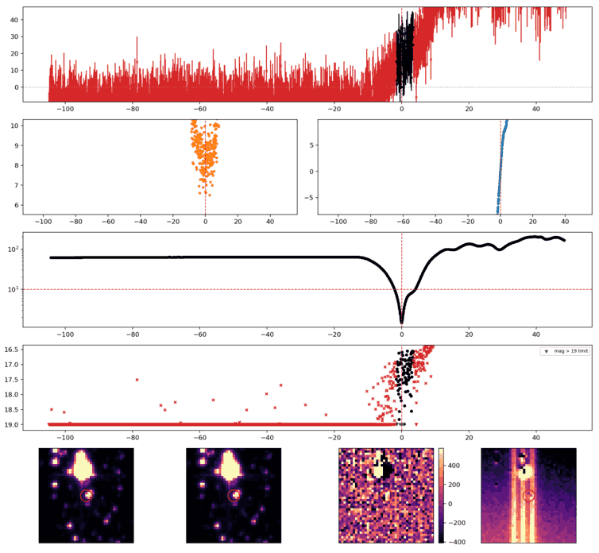
Search centered on refined position (161.7134225, -26.0942349 deg). Gaia coordinates are at J2016.0; proper motions are shown, without epoch propagation. A positional match does not change the candidate flags.
No Gaia DR3 sources found within 5 arcseconds.
Retrieved 2026-10-08T07:55:42.237192+00:00
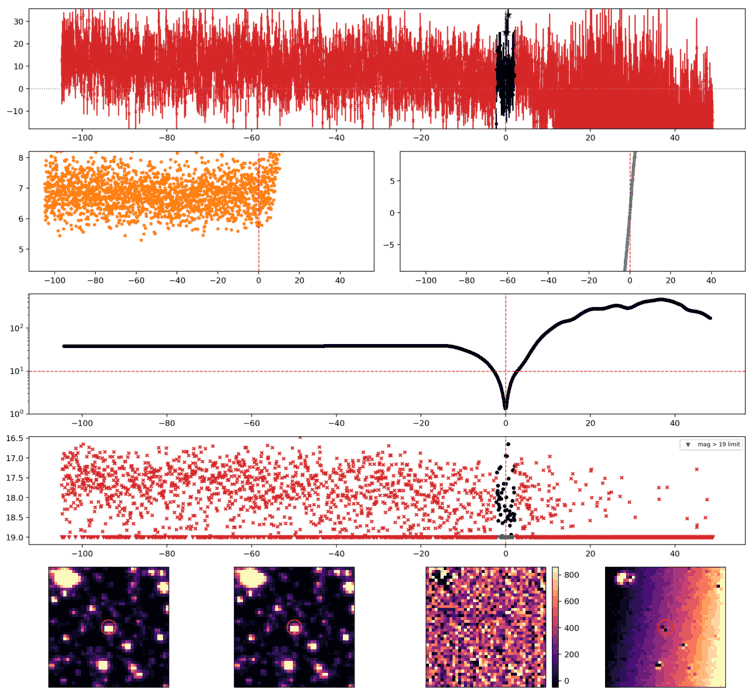
Search centered on refined position (164.2636400, -41.2559096 deg). Gaia coordinates are at J2016.0; proper motions are shown, without epoch propagation. A positional match does not change the candidate flags.
No Gaia DR3 sources found within 5 arcseconds.
Retrieved 2026-10-08T07:55:47.915164+00:00
Representative chosen by category, detection count, then Gaussian S/N. Original measurements and classifications are retained below.
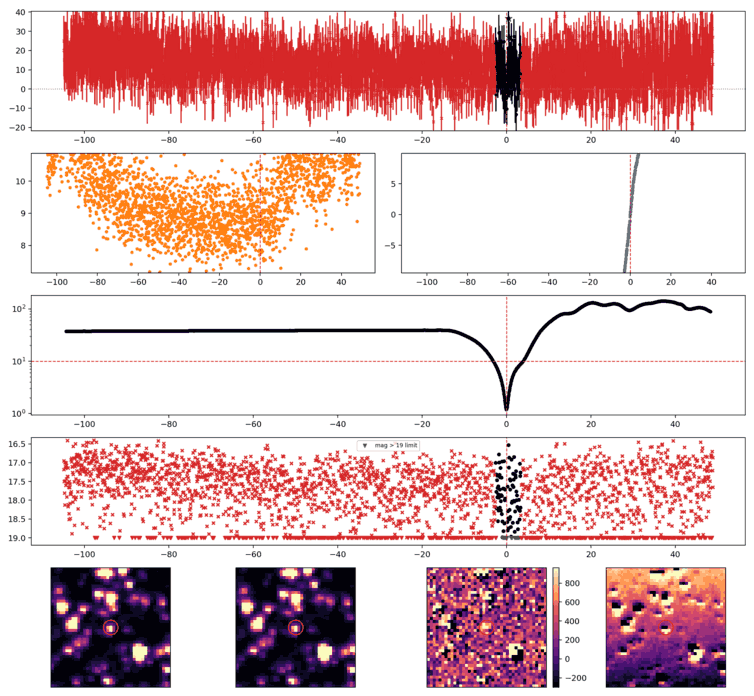
Search centered on refined position (175.2992344, -53.3587014 deg). Gaia coordinates are at J2016.0; proper motions are shown, without epoch propagation. A positional match does not change the candidate flags.
| Source ID / catalog entry | Separation (arcsec) | RA (deg) | Dec (deg) | G (mag) | BP (mag) | RP (mag) | Parallax ± error (mas) | PM RA* ± error (mas/yr) | PM Dec ± error (mas/yr) | RUWE | Variability |
|---|---|---|---|---|---|---|---|---|---|---|---|
| 5345319247815526528 | 2.715 | 175.2992738 | -53.3579476 | 15.998 | 16.469 | 15.368 | 0.425 ± 0.035 | -12.267 ± 0.032 | 5.512 ± 0.033 | 0.999 | NOT_AVAILABLE |
| 5345319213452056576 | 4.544 | 175.2982463 | -53.3598173 | 20.439 | 20.818 | 19.433 | 0.724 ± 0.663 | -6.088 ± 0.689 | 3.096 ± 0.674 | 1.122 | NOT_AVAILABLE |
Retrieved 2026-10-08T07:55:53.206899+00:00
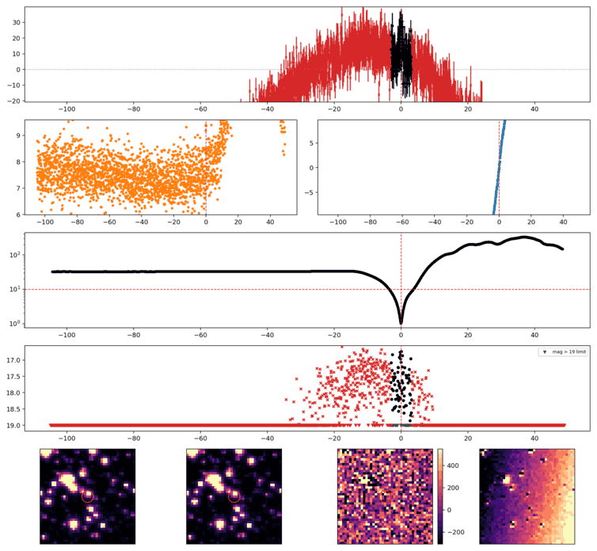
Search centered on refined position (165.7926431, -41.3464347 deg). Gaia coordinates are at J2016.0; proper motions are shown, without epoch propagation. A positional match does not change the candidate flags.
No Gaia DR3 sources found within 5 arcseconds.
Retrieved 2026-10-08T07:56:00.448570+00:00
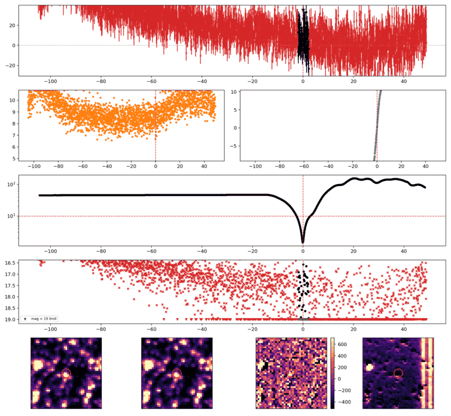
Search centered on refined position (169.7888387, -53.7050455 deg). Gaia coordinates are at J2016.0; proper motions are shown, without epoch propagation. A positional match does not change the candidate flags.
No Gaia DR3 sources found within 5 arcseconds.
Retrieved 2026-10-08T07:56:10.650568+00:00
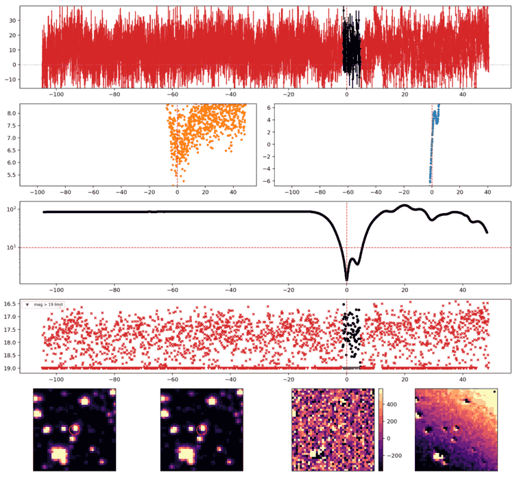
Search centered on refined position (154.1847154, -29.1313803 deg). Gaia coordinates are at J2016.0; proper motions are shown, without epoch propagation. A positional match does not change the candidate flags.
No Gaia DR3 sources found within 5 arcseconds.
Retrieved 2026-10-08T07:56:15.304578+00:00